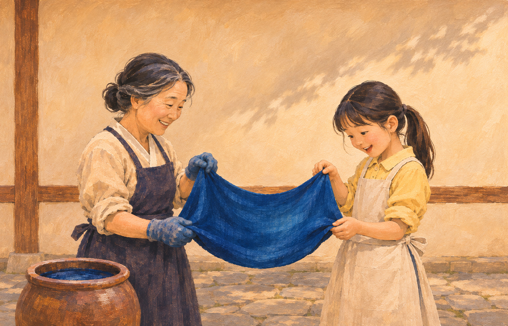

선정 펼친표지 5안
표지 목록
앞표지만 보기
뒷표지만 보기
다섯 안 PDF
펼친표지 모음
앞표지 모음
06
나주목사의 고을살이
주민이 두 손으로 소지(청원 문서)를 내밀고, 나주목사가 마루에서 사정을 듣습니다. 동헌에서의 만남을 상상해 그렸습니다.
21
읍성 안, 향교로 가는 길
책보를 멘 학동이 흙담길을 돌아서자, 명륜당 마루에서 책을 펴고 기다리는 스승이 보입니다.
30
영산포 나루에 닿은 짐
배가 나루에 닿자 뱃사공이 짚으로 싼 짐 하나를 내밉니다. 뭍의 일꾼이 두 손으로 받습니다.
81
배꽃 핀 나주 과수원
배나무에서 뻗은 가지 끝에 흰 꽃이 피었습니다. 농부가 붓으로 꽃가루를 묻힙니다.
82
쪽빛을 배우는 어린이

장인이 천의 한쪽을 펴자 어린이가 맞은편 끝을 잡습니다. 두 사람의 손 사이로 나주의 쪽빛이 드러납니다.